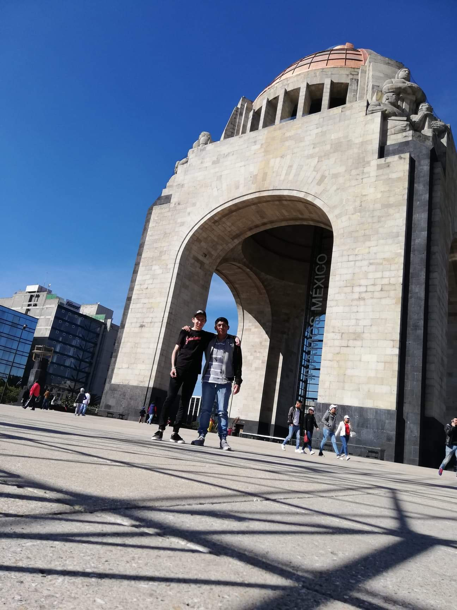

Pagina 5 visita al museo: Monumento a la Revolucion
relata visita:Las atracciones del Monumento a la Revolución inician en su cimentación, un recorrido por este laberinto subterráneo que alberga algunos ejemplares que forman parte de la exposición “Bajo la Mira”, instalación de rifles y balas de vidrio que son creación del arquitecto Andrés Mier y Terán en colaboración con Grupo Pavisa, Nouvel Studio y Grupo MYT.(En mi caso solo recorri esa parte)

historia:En 1897, el presidente Porfirio Díaz lanzó una convocatoria para la construcción de un Palacio Legislativo, mismo que albergaría además de las cámaras de senadores y diputados, dependencias de gobierno y oficinas. No resultó ganador del primer lugar ninguno de los participantes, y tras abundantes escándalos y conflictos por dicho concurso, el gobierno del presidente Díaz designó al arquitecto francés Émile Bénard como el encargado de diseñar y edificar un fastuoso recinto para los diputados y senadores, más este arquitecto nunca vio su sueño materializado, ya que la obra fue cancelada tras el derrocamiento de Díaz por la Guerra de la Revolución Mexicana. La realización del proyecto que de haberse construido, tendría mayores dimensiones que el Capitolio de Washington D. C.1? El sitio elegido para la edificación fueron unos terrenos pantanosos cerca de la colonia Tabacalera y del Paseo de la Reforma.
El Monumento a la Revolución es una obra arquitectónica y un mausoleo dedicado a la conmemoración de la Revolución mexicana. Es obra del arquitecto Carlos Obregón Santacilia, quien tomó la estructura de la Sala de los Pasos Perdidos del malogrado Palacio Legislativo Federal del arquitecto francés Émile Bénard para edificar el monumento, concluido en 1938. Actualmente es uno de los más reconocibles en la Ciudad de México, y forma parte de un conjunto integrado por el propio monumento, la Plaza de la República y el Museo Nacional de la Revolución. Se localiza en la Colonia Tabacalera de la alcaldía Delegación Cuauhtémoc, cerca del Centro Histórico de la Ciudad de México.